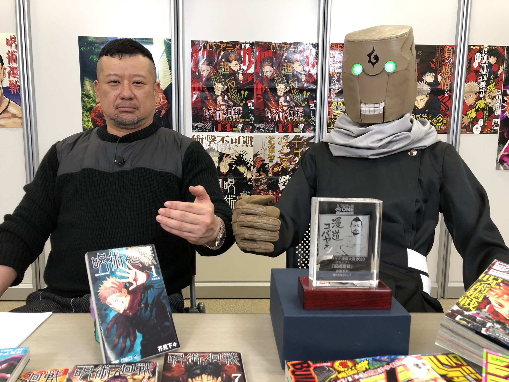

GEGE AKUTAMI, PEMBUAT MANGA TERKENAL JUJUTSU KAISEN
Biodata
Gege Akutami adalah nama pena seorang mangaka Jepang dan nama aslinya belum diketahui. Gege Akutami lahir di Prefektur Iwate pada tanggal 26 Februari 1992. Akutami pindah ke Sendai di Prefektur Miyagi saat kelas lima. Akutami mulai menggambar manga dengan meniru seorang teman, yang kemudian menginspirasinya untuk menjadi mangaka profesional. Akutami menyebut Tite Kubo sebagai pengaruh karyanya setelah membaca Bleach saat kelas empat, selain Hunter x Hunter dan Neon Genesis Evangelion di antara karya-karya lainnya. Pada tahun 2014, Gege Akutami mulai bekerja sebagai asisten Yasuhiro Kano di Kiss x Death.
Akutami menerbitkan karya pertamanya di tahun yang sama, berjudul "Kamishiro Sōsa" (神代捜査), sebuah one-shot yang diterbitkan dalam Jump NEXT! vol. 2 Shueisha pada 7 Mei 2014. Karya selanjutnya adalah No.9, dengan satu bab one-shot diterbitkan dalam Jump NEXT! vol. 2 pada 1 Mei 2015, dan one-shot lainnya dalam Weekly Shōnen Jump edisi ke-46 pada 10 Oktober 2015. Akutami menerbitkan one-shot "Nikai Bongai Barabarujura" (二界梵骸バラバルジュラ) dalam Weekly Shōnen Jump 2016 edisi ke-44, dirilis pada 3 Oktober 2016. One-shot ini dinominasikan untuk kontes "Gold Future Cup" ke-11 yang diselenggarakan majalah tersebut. Pada tahun 2017, Akutami menerbitkan Tokyo Metropolitan Curse Technical School (東京都立呪術高等専門学校, Tōkyō Toritsu Jujutsu Kōtō Senmon Gakkō), sebuah seri 4-bab yang ditayangkan dalam Jump GIGA sejak 28 April hingga 28 Juli 2017. Seri ini kemudian menjadi prekuel dari karya Akutami selanjutnya, Jujutsu Kaisen, yang kemudian diberi judul Jujutsu Kaisen 0. Akutami memulai penerbitan Jujutsu Kaisen dalam Weekly Shōnen Jump 2018 edisi ke-14, dirilis pada 5 Maret 2018.